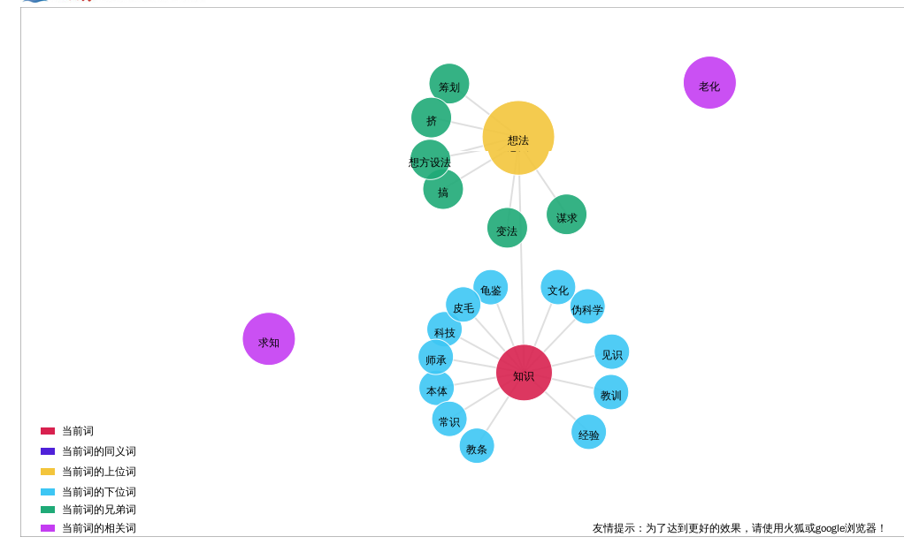
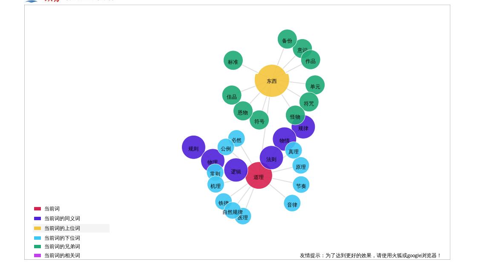
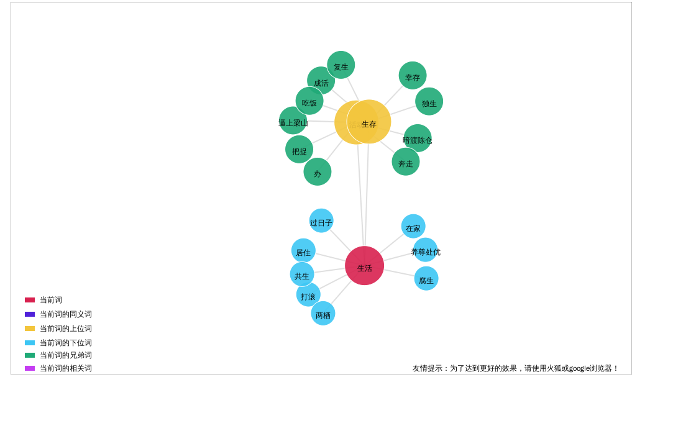

Conversation with 81184027 at Wed 11 Sep 2013 11:52:47 AM CST on 154115835 (webqq)
(11:52:57 AM) 光: 达尔文的姻缘 ·方舟子· “天啊，想到一个人的一生就像一只中性的蜜蜂不停地工作、工作却一无所获， 就令人无法容忍。不，不，不该这样。设想一辈子就孤独地生活在伦敦烟熏肮脏的 房子里。只要想像你自己有一个美好温柔的妻子，坐在温暖的火炉旁的沙发上，有 书，也许还有音乐……结婚——结婚——结婚。证毕。” 1838年，29岁的达尔文像解一道数学题一样，比较了结婚的好处和坏处之后， 决定结婚。但是找谁结婚呢？他的初恋情人范妮·欧文已在6年前嫁人。他的姐妹 们曾经想撮合他和另一个范妮，大他3岁的表姐。范妮·韦奇伍德性格温和、有洁 癖、勤劳刻苦，适于当乡村牧师（达尔文的原定职业）的妻子。我们不知道达尔文 对这个安排有何意见，他从未在信中提到这个表姐。但是不管达尔文本人是否看得 上这位身材矮小、相貌平平的表姐，此时已无关紧要——范妮·韦奇伍德已在6年 前病死。 合适的人选只剩下韦奇伍德家的小女儿、大达尔文9个月的爱玛。爱玛与她的 姐姐大不一样，她漂亮、优雅、聪明、开朗、善解人意、多才多艺，喜欢射箭、骑 马、跳舞、溜冰，受过良好的家庭教育，懂法语、意大利语和德语，有音乐天赋， 曾经到巴黎向肖邦学钢琴。这样的女子自然有众多的追求者，但她拒绝了多次求婚， 把自己变成了大龄女青年，原因是要照顾中风卧床的母亲和有残疾的大姐伊丽莎白。 如果达尔文不来求婚，她很可能一直保持单身。女儿为照顾父母错过姻缘终身不嫁 在当时并非罕见，达尔文的二姐苏姗、达尔文的四女儿伊丽莎白都是如此。 “他是我见过的最开放透明的人，他说的每个单词都表达了他的真实想法。他 充满深情，对他的父亲和姐妹都非常好，十分和蔼，并拥有一些能让人倍感愉快的 小优点，例如对人不挑剔和善待动物。”爱玛在给姨妈的信中如此描述她从小熟悉 的表弟。达尔文的求婚让她感到意外，立即接受。两个多月后，1839年1月，两人 闪电结婚，开始了持续40多年的幸福和谐的姻缘。 在达尔文列出的结婚好处中，排在第一位的是“孩子”。婚后的16年间，爱玛 不间断地处于怀孕、生产、哺乳、断奶、怀孕……的循环中，生下了10个孩子。达 尔文想要的不是一个事业助手，而是生活伴侣，能照看家庭，聊天，分享音乐， “教会我有比沉默孤独地构建理论和积累事实更大的快乐”。在这方面爱玛非常称 职，全身心地照顾丈夫和子女。达尔文并不觉得有让爱玛参与或深入了解其科学研 究的必要，爱玛也不觉得达尔文的研究有多大的意思，但是必要时她帮他做实验和 校对。她看重达尔文的科学研究，不是因为认为其有趣或能带来名望，而是因为她 知道这对达尔文来说有多么的重要。 唯一的问题是宗教信仰。和当时普通女子一样，爱玛是个虔诚的基督徒，而达 尔文自从环球航行归来，就对基督教信仰产生了怀疑。达尔文的父亲也不信教，但 是他忠告达尔文，要像他一样向妻子隐瞒自己对宗教的看法，否则会影响家庭幸福。 但是“透明人”达尔文在结婚前就向爱玛坦白了自己不信教，并透露了自己在秘密 研究进化论。这成了爱玛一生的烦恼，她担忧的是他们死后不能一起上天堂永远在 一起。按照基督教的教义，像达尔文这种不信基督教的人只能下地狱，除非能在死 前皈依基督教。 在婚后不久，爱玛发现自己怀孕后，促使她更现实地思考死亡的问题：在当时， 这并非多虑，达尔文的表哥福克斯的妻子和达尔文儿子弗朗西斯的第一任妻子都是 因为生小孩死的。爱玛给达尔文写了一封信，虽然他们生活在一起，但是她显然觉 得这个问题重大到需要用文字来表述。她表示尊重达尔文对基督教的怀疑，但是也 相信达尔文的看法还未定型。她希望达尔文在科学研究中养成的除非已被证明否则 就不相信的习惯，不要影响到他对无法用相似的方法证明、超出人们的理解能力的 其他事情的判断。这对她来说很重要，“任何关系到你的事情同样关系到我，如 果我想到我们不能永远相互拥有，对我来说将会是最不幸的事。” 达尔文此时对基督教的看法的确还未定型，他只是无法相信基督教《圣经》叙 述的是真实的历史，无法接受《圣经》中那位暴虐、凶残的上帝，无法相信基督 的神迹会是真实的……他是直到大女儿安妮夭折才彻底地否定了基督教。“怀疑以 一种很慢的速率在我的心中滋长着，但最后还是完成了。”达尔文晚年在自传中回 顾自己的心路历程时写道，“速率是那样的慢，以至我没有感到有什么苦恼，而且 此后我连一秒钟也没有怀疑过我的结论是正确的。真的，我很难明白人们怎么能够 希望基督教是真实的，因为果真如此的话，其经文以明明白白的语言表示了，凡是 不信仰基督的人，其中包括我的父亲、兄弟以及几乎一切我的最好的朋友，都要永 世受到惩罚。这真是一种可咒诅的教义。” 20多年后，当达尔文病重时，爱玛又给他写了一封类似的信。但是一切已晚。 在科学理性和亲人感情之间，达尔文选择了前者。他知道这样的选择对爱玛来说意 味着什么。基督教“可咒诅的教义”在他们之间划下了一片“痛苦的空间”（爱玛 语），达尔文只能默默承受。他珍藏着这两封他没有答复的“美丽的信”，和他的 手稿放在一起。晚年的某一天，达尔文翻出了第一封信，想到了爱玛无法摆脱的苦 恼，想到了她永远不变的爱，在信的下方加了一句：“当我死时，你要知道，有许 多次，我亲吻它并为之哭泣。”
(12:12:31 PM) 老鹰: 能从光的口中说出屁德二字已经证明有知识的光乃大德之士！妙！
(12:29:42 PM) 光: 不要虚谈
(12:30:14 PM) 光: 言辞永远是空的，而且通向毁灭的道路总是和多谈理想联系在一起的。但是人格绝不是靠所听到的和所说出来的言语而是靠劳动和行动来形成的。 @爱因斯坦
(12:34:58 PM) 老鹰: 而言行是一面镜子，能照见真实的自我。
(12:38:31 PM) 光: 有几个人能说认知自我了呢
(12:42:35 PM) 老鹰: 81184027群的
(12:43:00 PM) 老鹰: 很少
(12:43:18 PM) 光: 我近年35了
(12:43:21 PM) 光: 今年
(12:43:40 PM) 光: 回顾以前，感觉以前的我非常的不成熟
(12:43:54 PM) 老鹰: 我49
(12:44:00 PM) 光: 再过几年看今天的我
(12:44:28 PM) 大海: 我等着
(12:44:28 PM) 光: 想必也会有同样的感受
(12:44:43 PM) 大海: 有的
(12:44:45 PM) 光: 嗯
(12:44:50 PM) 老鹰: 是
(12:45:14 PM) 光: 所以我不敢说我真的看清了我自己了
(12:46:46 PM) 老鹰: 在而立之年能知天命也不错！
(12:47:10 PM) 光: 其实真的差的很远
(12:47:15 PM) 光: 自己心知
(12:49:00 PM) 老鹰: 自省就能完美
(12:49:40 PM) 光: 对我而言只是把以前漏下的功课补起来
(12:50:15 PM) 老鹰: 狂妄自是最坑害自己
(12:50:22 PM) 光: 嗯
(12:50:43 PM) 光: 保持饥饿，保持无知
(12:51:32 PM) 老鹰: 我们有代沟吗？
(12:52:06 PM) 光: 求知若渴
(12:52:15 PM) 光: 求知若愚
(12:52:23 PM) 光: 这样说可能好理解一些
(12:52:44 PM) 光: 上面是外文的直译
(12:53:03 PM) 老鹰: 知和识是两个概念
(12:53:03 PM) 光: Stay Hungry. Stay Foolish.
(12:54:06 PM) 老鹰: 我不太懂英文
(12:55:01 PM) 光: 嗯
(12:55:16 PM) 光: 上面那个是直译
(12:55:26 PM) 光: (12:50:43 PM) 光: 保持饥饿，保持无知
(12:56:02 PM) 光:
(12:52:06 PM) 光: 求知若渴
(12:52:15 PM) 光: 求知若愚
(12:56:11 PM) 光: 这个应该比较好懂
(12:56:47 PM) 光: 刚才查了一下知和识的解释
(12:56:58 PM) 光: 知应该是指学问
(12:57:10 PM) 光: 识应该是指所知道的道理
(12:57:26 PM) 光: http://www.zdic.net/z/1f/js/77E5.htm
(12:57:36 PM) 光: 3. 学识，学问：～识，求～。无～。
(12:57:55 PM) 光: 2. 所知道的道理：知～。常～。
(12:58:06 PM) 光: http://www.zdic.net/z/24/js/8BC6.htm
(12:58:53 PM) 老鹰: 这个我懂，我读到高二因家境贫寒而辍学，后自学至今
(12:59:00 PM) 光: 嗯
(12:59:22 PM) 光: 其实一个人只要不放弃求知
(12:59:27 PM) 光: 自学其实更好
(01:01:25 PM) 光: 我解释的简单
(01:01:32 PM) 光: 应该有更深的含义
(01:07:11 PM) 光: 
(01:08:03 PM) 老鹰: 道与理即为识，这是书本上没有的
(01:10:31 PM) 老鹰: 知而不识为无道
(01:10:52 PM) 光: 
(01:11:55 PM) 老鹰: 识而不行为虚浮
(01:13:05 PM) 光: 知识的识所指的道理应该是事理的意思
(01:13:11 PM) 光: 事物的规律
(01:13:23 PM) 光: 知所指的是学问
(01:13:37 PM) 光: 识指的是所知道的事物规律
(01:14:20 PM) 老鹰: 也对
(01:14:20 PM) 光: 嗯
(01:14:22 PM) 光: 我查了
(01:14:45 PM) 光: http://www.zdic.net/c/3/22/50962.htm
(01:14:52 PM) 光: 之前也是比较模糊
(01:16:06 PM) 老鹰: 中国文化內函极深
(01:16:15 PM) 光: 一词多义
(01:16:23 PM) 光: 语境变了意思就变了
(01:16:41 PM) 光: 单从字面上看我那样说法是对的
(01:16:50 PM) 光: 但是换了语境就另当别论了
(01:17:12 PM) 光: 我这个算是直解
(01:17:17 PM) 光: 最简单的
(01:17:41 PM) 老鹰: 儒学与佛道各有千秋
(01:17:52 PM) 光: 嗯
(01:17:55 PM) 光: 角度不同
(01:17:57 PM) 光: 认知不同
(01:18:17 PM) 光: 多元化，就是多角度
(01:19:21 PM) 老鹰: 苍吉造字只是众人智慧的总结，来源于生活
(01:19:31 PM) 光: 传说
(01:19:44 PM) 光: 历史有很多种
(01:19:53 PM) 光: 有文字记载的
(01:20:02 PM) 光: 称之为信史
(01:20:10 PM) 光: 还有没有文字记载的
(01:20:14 PM) 光: 口头流传的
(01:20:23 PM) 光: 不同民族的神话传说
(01:20:31 PM) 光: 仓颉造字就是其一
(01:21:01 PM) 老鹰: 是的
(01:20:59 PM) 光: 嗯
(01:21:33 PM) 光: 越久远的历史，越充满神秘
(01:22:00 PM) 光: 考证很难
(01:22:05 PM) 光: 分歧很多
(01:23:24 PM) 老鹰: 去伪存真古为今用是根本
(01:23:28 PM) 光: 很难
(01:24:01 PM) 光: 越久远的事情资料越少
(01:24:15 PM) 光: 我们只能相信古人没有欺骗我们
(01:24:18 PM) 光: 如果骗了
(01:24:27 PM) 光: 我们也只好认了
(01:24:38 PM) 光: 因为资料少
(01:25:03 PM) 光: 近代历史就不同了
(01:25:07 PM) 光: 资料太多
(01:25:46 PM) 老鹰: 人生百十年，把握现在与未来，过去是鉴
(01:25:57 PM) 光: 嗯
(01:26:02 PM) 光: 是啊
(01:26:05 PM) 光: 人寿有限
(01:26:11 PM) 光: 知识无涯
(01:28:35 PM) 老鹰: 苛求是烦恼的开始，求而不得是痛苦的延伸
(01:29:16 PM) 光: 按照佛教的观点
(01:29:32 PM) 光: 最值得把握的只有当下
(01:29:45 PM) 老鹰: 对
(01:30:23 PM) 光: 如果把握了当下就把握了未来
(01:30:44 PM) 老鹰: 太对了
(01:30:45 PM) 光: 嗯
(01:32:13 PM) 老鹰: 懂得生活才能活出来
(01:32:50 PM) 光: 这个又是一个大问题
(01:32:59 PM) 光: 生活
(01:35:14 PM) 光: 
(01:36:14 PM) 老鹰: 感恩世界才心明眼亮，献身世界才能照亮人心
(01:36:33 PM) 光: 生活这个问题太大
(01:36:38 PM) 光: 我还没有看懂
(01:36:48 PM) 光: 等我想清楚再谈吧
(01:36:59 PM) 老鹰: 这才是真光
(01:37:51 PM) 老鹰: 好吧！再见！
(01:37:52 PM) 光: 嗯
(01:38:28 PM) 光: 生活应该和生存不同
(01:39:13 PM) 光: 大多数人只是停留在生存的阶段
(01:39:22 PM) 光: 并没有真正的生活过
(01:40:04 PM) 光: 留一个话题，以后补充
(02:10:30 PM) 、淺笑: 尊敬的群主
我们跟您混了很长时间了，马上中秋节快到了，你想好发什么礼品给我们了吗？不是我们威胁你，五一，十一不发东西就算了，圣诞不发也算了。可中秋节你要再不发礼品给我们的话，我们就把你的手机号，QQ号贴在电线杆上，上面加一句话：一夜情专线，管饭，可开发票……我们都是文化人，讲的是道理，您自己看着办吧！
——您的群成员